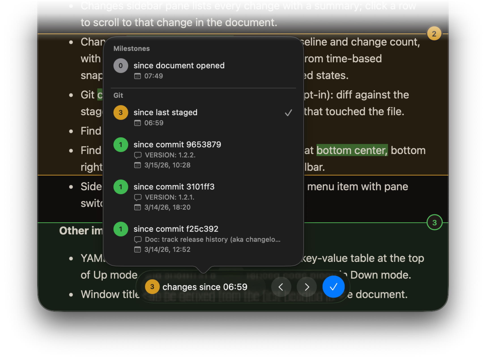

v2.0.0
This version introduces change tracking! Compare your document against earlier reloads from the same Mud session. More:
- Change comparisons show highlighted insertions and deletions in both Up and Down modes.
- Word-level diffs show exactly what changed within each line.
- Up mode organizes changes into groups, and condenses consecutive red-delete + green-insert blocks into “orange-mix” groups. This makes it easy to see regions of change without the noise. Click the index circle for the change to expand it.
- Changes sidebar pane lists every change with a summary; click a row to scroll to that change in the document.
- Changes floating controls show the active baseline and change count, with a popover to switch baselines — choose from time-based snapshots, document-opened, or last-accepted states.
- Git commit comparisons (direct distribution, opt-in): diff against the staged version or any of the last five commits that touched the file.
- Find bar redesigned as a floating control bar.
- Find and Changes control bars can be floated at bottom center, bottom right, or top right. Toggle them via the app toolbar.
- Sidebar toggle consolidated into a single View menu item with pane switcher (Outline / Changes).
Other improvements:
- YAML frontmatter parsed into an expandable key-value table at the top of Up
mode, and shown in a
---fenced code block in Down mode. - Window title can be derived from the first heading in the document.
Screenshot of the Changes feature:
